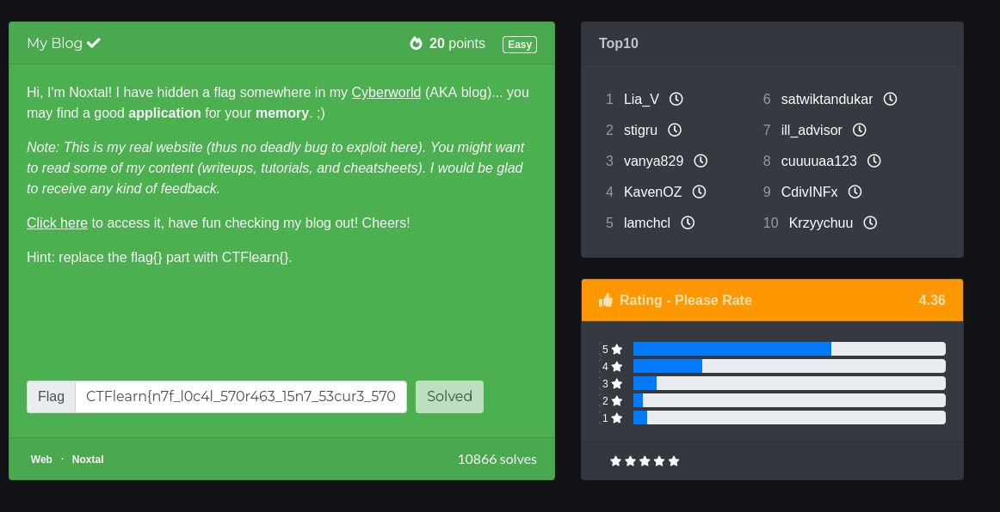
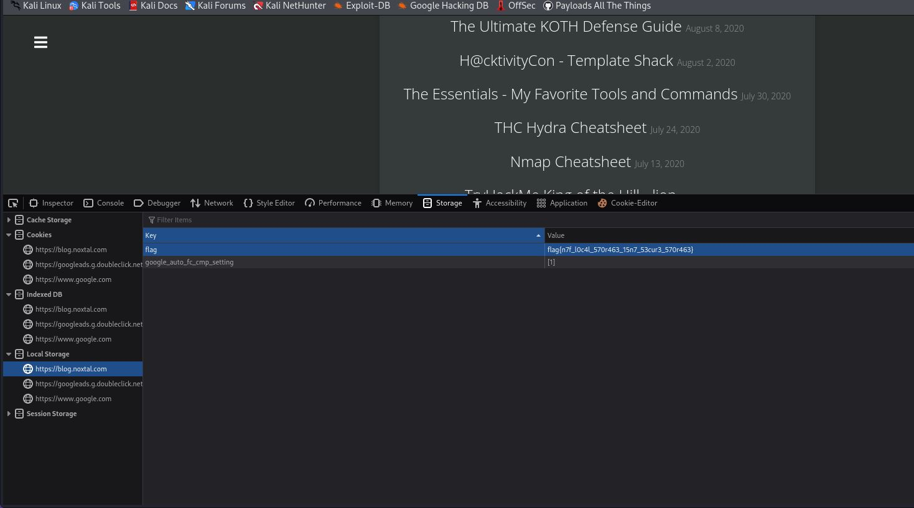
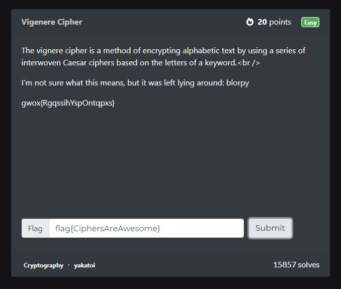
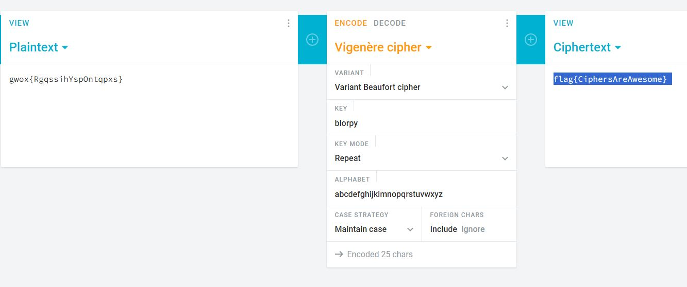
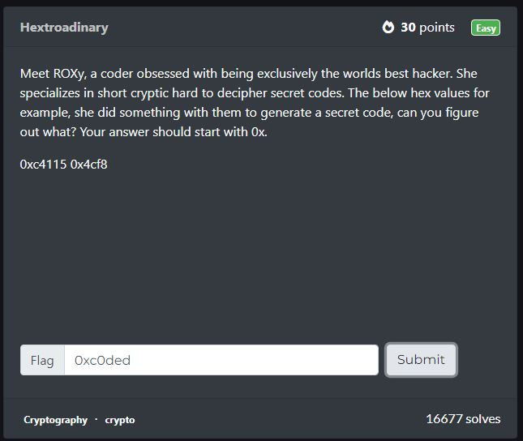
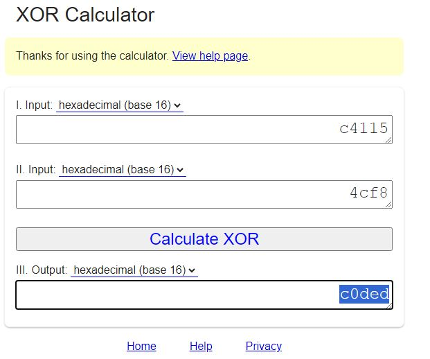

3 szybkie CTF ze strony CTFlearn
2024-02-22
W pierwszym zadaniu był link do prawdziwego bloga użytkownika społeczności CTFlearn po długich poszukiwaniach z lekka podpowiedzią w komentarzach zacząłem szukać w devToolsach gdzie w pamięci udało mi się znaleść flagę.
 Źródło: https://ctflearn.com/challenge/979
W drugim zadania tytuł brzmiał Vigenere Cipher dlatego zacząłem szukać takiego gdy odnalazłem takiego wpisałem w miejsce kodu tekst blorpy który był podany w zadaniu co pozwoliło mi rozwiązać to zadanie. Ciekawe zadanie bo dowiedziałem się o algortymie szyfrującym o którym nigdy wcześniej nie słyszałem.
 Źródło: https://ctflearn.com/challenge/305
Ostanie zadanie po imieniu programistki ROXy sugerowało że trzeba użyć XOR co też zrobiłem, na początku na pierwszej stornie miałem problem bo dawało jakieś dziwnne wyniki ale po znalezieniu innej aplikacji udało się uzyskać flagę
 Źródło: https://ctflearn.com/challenge/158